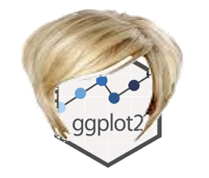
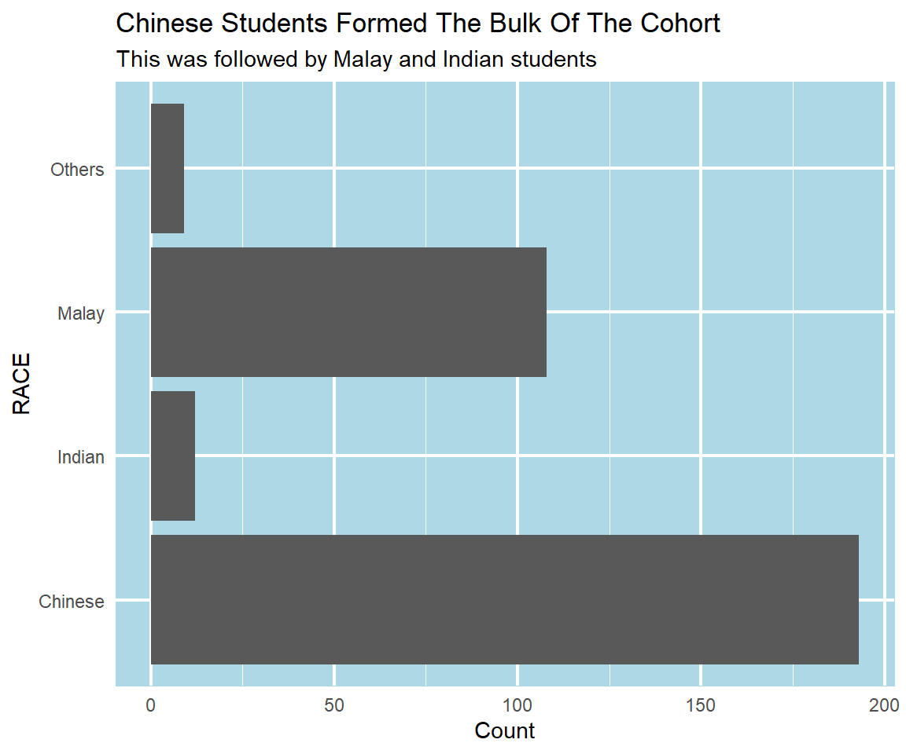
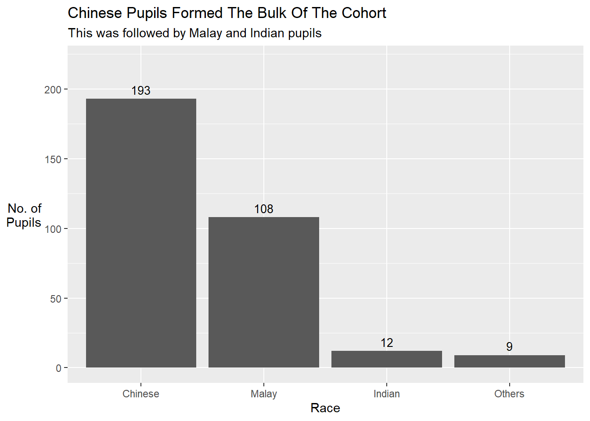
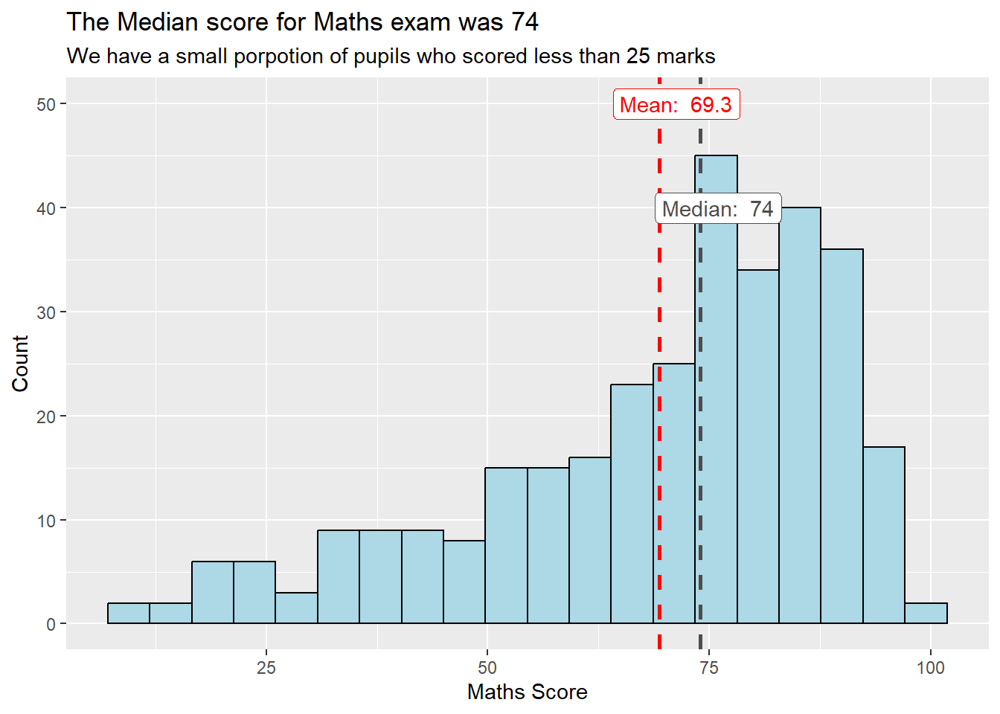
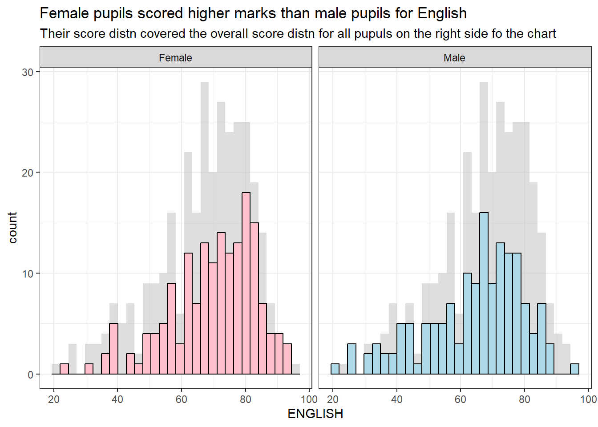
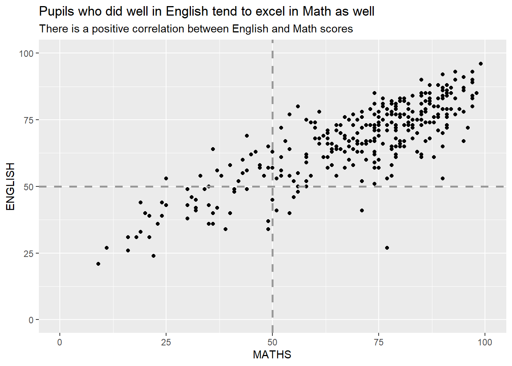
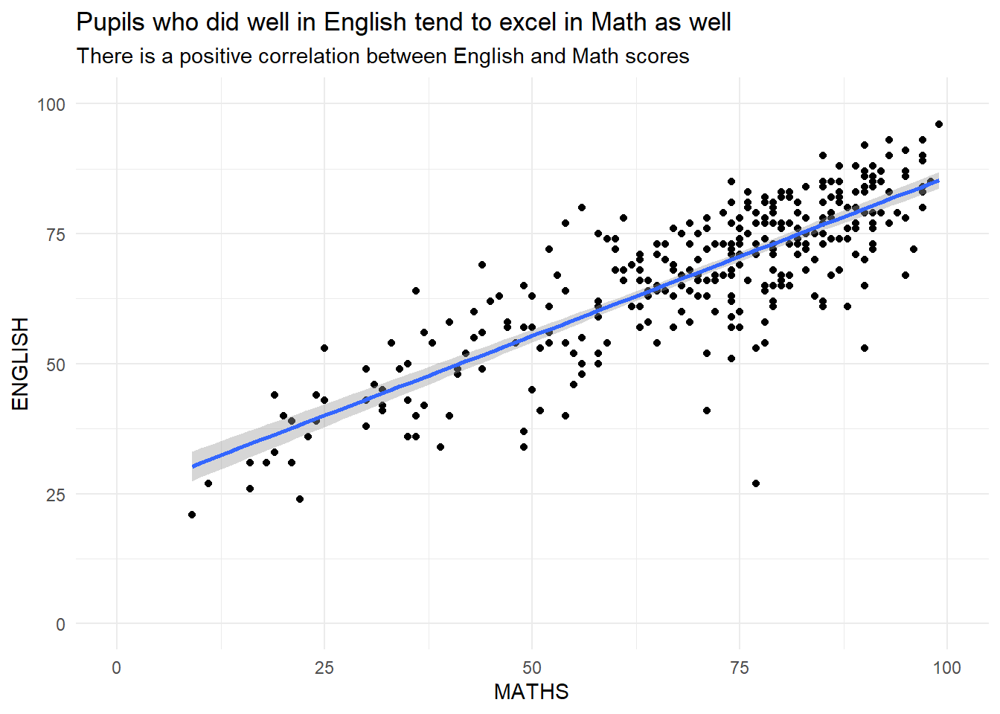

1 A Light Makeover of ggplots
In-Class Exercise for Week 1
First published: 17-Apr-2023

1.1 Learning Outcome
We will:
- use the graphic layers of ggplot2 to touch up various plots to make them more intuitive and appealing.
1.2 Getting Started
1.2.1 Install and load the required r libraries
Load the tidyverse library.
1.2.2 Import the data
We will be using the same exam scores data-set that was featured in my Hands-On Ex 1.
1.3 Candidates for Makeover
1.3.1 Working with theme
We can use the theme() function to change the colors of the plot panel background of the following plot to light blue and the color of grid lines to white. We will also include the title and subtitle to make the plot more meaningful.
Show the code
ggplot(data=exam_data, aes(x=RACE)) +
geom_bar() +
ylab('Count') +
theme_minimal() +
coord_flip() +
theme(
panel.background = element_rect(fill = "lightblue", colour = "lightblue"),
panel.grid.major = element_line(size = 0.75, linetype = 'solid', colour = "white"),
panel.grid.minor = element_line(size = 0.25, linetype = 'solid', colour = "white")
) +
labs(title = "Chinese Students Formed The Bulk Of The Cohort",
subtitle = "This was followed by Malay and Indian students")
1.3.2 Sort and label the columns in a chart
For the column chart displayed below, we have to address the following criticisms:
y-axis title is not clear (i.e. count)
To support effective comparison, the bars should be sorted by their respective frequencies.
For static graph, frequency values should be added to provide addition information.
To address the first comment, we use ylab() and theme() function to relabel and calibrate the position of the y-axis title. For the 2nd and 3rd comment, we first summarise the data-set using group_by() and summarise() function to get the count of pupils by race. Thereafter, we use the reorder() function to sort the columns and geom_text() function to display the count.
Show the code
# Group the data by Race and aggregate by pupil count
sorted_data <- exam_data %>% group_by(RACE) %>% summarise(count=n())
# Plot the chart
ggplot(data = sorted_data, aes(x=reorder(RACE, -count),y=count)) +
ylim(0,220) +
geom_col() +
ylab('No. of\nPupils') +
theme(axis.title.y = element_text(angle = 0, vjust = 0.5, hjust=1))+
xlab('Race') +
geom_text(aes(label = count), vjust = -0.5, size = 3.5) +
labs(title = "Chinese Pupils Formed The Bulk Of The Cohort",
subtitle = "This was followed by Malay and Indian pupils")
1.3.3 Add mean and median lines on the histogram
We can use the geom_vline() function to add a computed mean and median line onto the chart.
Show the code
ggplot(data=exam_data,
aes(x= MATHS)) +
geom_histogram(bins=20,
color="black",
fill="light blue") +
geom_vline(aes(xintercept=mean(MATHS, na.rm=T)),
color="red",
linetype="dashed",
size=1) +
geom_vline(aes(xintercept=median(MATHS, na.rm=T)),
color="grey30",
linetype="dashed",
size=1) +
xlab('Maths Score') +
ylab('Count') +
annotate("label", color = "red", x=mean(exam_data$MATHS, na.rm=T)+2, y=50,
label=paste("Mean: ", round(mean(exam_data$MATHS, na.rm=T), 1)),fill = "white") +
annotate("label",color="grey30", x=median(exam_data$MATHS, na.rm=T)+2, y=40,
label=paste("Median: ", round(median(exam_data$MATHS, na.rm=T), 1)),fill = "white") +
labs(title = "The Median score for Maths exam was 74",
subtitle = "We have a small porpotion of pupils who scored less than 25 marks")
1.3.4 Make the basic histogram more informative
The histograms below are elegantly designed but not informative. This is because they only reveal the distribution of English scores by gender but without context such as the score distribution for all pupils.
To show the distribution of English scores for all pupils as the background, we can add another geom_histogram() layer for all pupils.
Show the code
d <- exam_data
#create a d_bg dataframe without the gender attribute
d_bg <- d[, -3]
ggplot(d, aes(x = ENGLISH, fill = GENDER)) +
geom_histogram(data = d_bg, fill = "grey", alpha = .5) +
geom_histogram(colour = "black") +
facet_wrap(~ GENDER) +
# guides = false removes the legend from the chart
scale_fill_manual(values = c("Female" = "pink", "Male" = "light blue")) +
guides(fill = FALSE) +
theme_bw() +
labs(title = "Female pupils scored higher marks than male pupils for English",
subtitle = "Their score distn covered the overall score distn for all pupuls on the right side fo the chart")
1.3.5 Dividing a chart into 4 quadrants
We can use geom_hline() and geom_vline() to divide the chart into equal quadrants (see After(1)). At the same time, we can use the coord_cartesian() function to adjust the limits of the coordinate system for a plot to only display the data that falls within those limits.
In After (2), I included a regression line and swtich the background to white (using theme_minimal()) to make the relationship between English and Math scores more prominent.
Show the code
ggplot(data=exam_data,
aes(x=MATHS, y=ENGLISH)) +
geom_point() +
coord_cartesian(xlim=c(0,100),
ylim=c(0,100)) +
geom_hline(yintercept=50,
linetype="dashed",
color="grey60",
size=1) +
geom_vline(xintercept=50,
linetype="dashed",
color="grey60",
size=1) +
labs(title = "Pupils who did well in English tend to excel in Math as well",
subtitle = "There is a positive correlation between English and Math scores") 
Show the code
ggplot(data=exam_data,
aes(x=MATHS, y=ENGLISH)) +
geom_point() +
coord_cartesian(xlim=c(0,100),
ylim=c(0,100)) +
geom_smooth(method=lm,linewidth=1.0) +
labs(title = "Pupils who did well in English tend to excel in Math as well",
subtitle = "There is a positive correlation between English and Math scores") +
theme_minimal()
\(**That's\) \(all\) \(folks!**\)